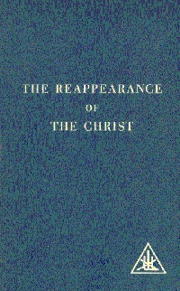

1935
1935 17 apr. En morgon vid påsktiden uppenbarar sig Jesus
och ber honom ta på sig missionen som
Återkomstens Herre.
Jesus kom till mig och ropade 'herr Yong Myung Moon. Låt oss gå för att ta emot Välsignelsen.'
Från denna dagen blir Han en pojke (15 år gammal; 16 är enligt koreansk räkning) som är tyst och borta i sina
tankar.
Under de kommande 9 åren (1936-44)
kämpar Han en bitter kosmisk kamp mot satan,
om den uppenbarelse som kommer att kallas
Principerna.
I slutet av denna period fastade han 40 dagar, och mötte Konfucius, Budda, Mohammed, Jesus och hans lärjungar, samt många andra religiösa ledare, och sökte bekräftelse på uppenbarelsen.
Intressanta paralleller är att flera medier runt världen (kring 1945), ex.
Alice Bailey tog emot budskap från andliga världen att Kristus återkomst var nära förestående.
Citat: "'tidpunkten för beslutet', som det kallas i alla hierarkiska cirklar, skedde under perioden mellan
fullmånen i juni 1936 och fullmånen i juni 1945. Tidpunkten för beslutet täckte därför 9 år (en relativt kort
tidsperiod); den resulterade i beslutet att Kristus 'Världsförkunnaren' åter skulle visa sig eller återvända
i synlig form på jorden så snart som möjligt, och avsevärt tidigare än planerat."

/THE REAPPPEARANCE OF THE CHRIST Publ. 1948.

Fler andliga paralleller: Urantiaboken (ibland kallad 'Urantia papers' eller Femte epokgörande
uppenbarelsen)
en andlig och filosofisk bok som diskuterar Gud, Jesus, vetenskap, kosmologi, religion, historia och öde.
Den har sitt ursprung i Chicago någon gång
mellan 1924 och 1955
(1936-1945 = var den tidsperiod
Principerna
uppenbarades genom Sun Myung Moon).